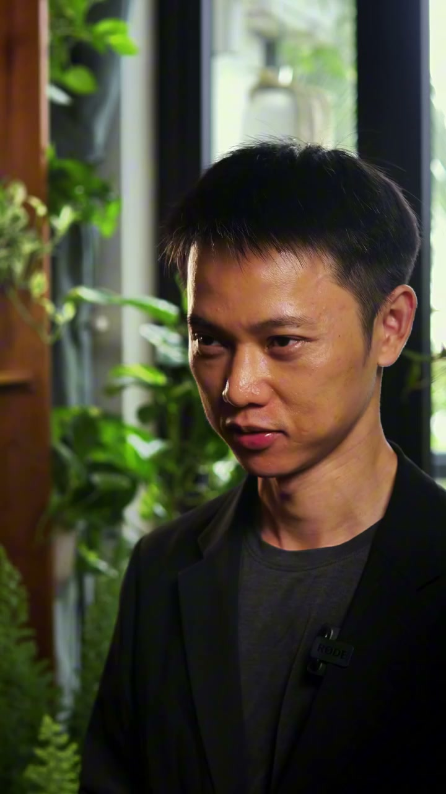
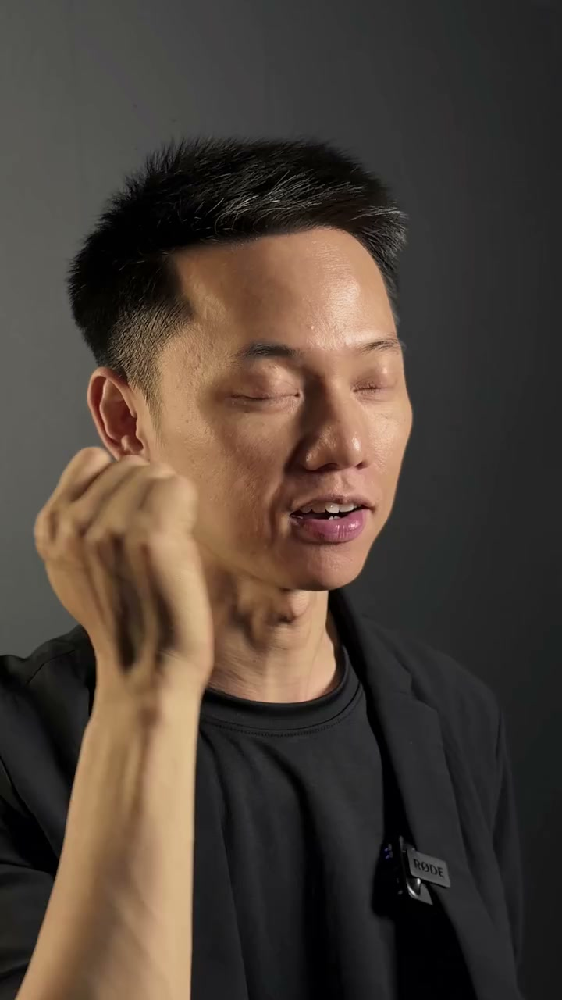

Talking Head 2.0 — Khuôn Mặt Là Tem Bảo Hành & Nghệ Thuật 2 Góc Máy Chuẩn MasterClass
Bước tiến từ người làm nghề giấu mặt sang vị thế Bác sĩ chuyên khoa tại bàn làm việc: Chỉ lộ diện 20–30% A-Roll ở 3 giây đầu, nhịp chuyển ý và câu kết để đóng dấu trách nhiệm; 70–80% thời lượng còn lại phủ bằng chứng thị giác (B-Roll) đè lên lời nói. Không cần thuộc lòng cả trang giấy, không cần thiết bị đắt tiền — làm chủ kỹ thuật 1 dòng 1 câu, đếm nhịp 1-2 và 2 góc máy chỉ với 1–2 chiếc điện thoại và 1 cây đèn bàn.
Ở Định dạng 1 (Voice-Over), bạn đã biết lấy đôi bàn tay làm bằng chứng để vượt qua nỗi ngại ống kính trong tuần đầu tiên. Nhưng khi bước sang các sản phẩm, dịch vụ tư vấn, nha khoa, nội thất, thẩm mỹ, bất động sản hay đào tạo có giá trị cao (High-Ticket), khách hàng luôn tự hỏi một câu trước khi chuyển khoản: “Ai là người trực tiếp chịu trách nhiệm nếu có chuyện xảy ra?”. Talking Head 2.0 ra đời để trả lời dứt điểm câu hỏi đó.
Giảng viên chọn 1 trong 4 kịch bản mở màn dưới đây trong 3 phút đầu buổi học để tháo bỏ tâm lý ngại lộ mặt và kéo toàn bộ sự chú ý của lớp vào bàn làm việc:
Khách hàng giá cao có mua của người giấu mặt?
“Buổi trước các bạn đã giấu mặt rất tốt, để giọng nói và đôi bàn tay làm việc. Giờ tôi hỏi thật cả lớp một câu: Nếu phải chi 50 triệu làm răng, 200 triệu làm nội thất hay 30 triệu học nghề, các bạn có dám giao tiền cho một người mà mình chưa từng nhìn thấy mặt không?” → Dừng đúng 3 giây nhìn khắp lớp, rồi bật Slide 03.
10 giây Voice-Over vs. 10 giây Talking Head
Bật liên tiếp 10 giây video Voice-Over giấu mặt và 10 giây video Talking Head ngồi tại bàn làm việc có cùng một nội dung. Hỏi cả lớp: “Cùng một lời thoại, cùng một tay nghề, hai video này khác nhau ở điểm nào? Khác ở chỗ: Video thứ hai có một con người bằng xương bằng thịt đứng ra ký tên chịu trách nhiệm.”
Làm mẫu Hook vật lý 3 giây không lời
Giảng viên bước vào bàn, kéo ghế ngồi xuống, đặt chiếc điện thoại lên mặt bàn, cầm ấm trà rót ra chén — im lặng hoàn toàn trong 3 giây đầu rồi mới ngước lên nhìn cả lớp nói: “Các bạn vừa nhìn thấy 3 giây Hook vật lý giữ chân người xem trước khi cất tiếng. Hôm nay cả lớp sẽ làm chủ kỹ thuật này.”
20 giây lộ diện nhưng chỉ nói đúng 3 câu
“Rất nhiều bạn sợ Talking Head vì nghĩ phải ngồi nói thao thao bất tuyệt suốt 60 giây. Không! Cuối buổi hôm nay, mỗi người sẽ cầm về 1 video 20 giây có mặt mình cực kỳ đĩnh đạc — nhưng các bạn chỉ phải ngước lên nói đúng 3 câu ngắn, 70% còn lại vẫn là cảnh B-Roll tay làm việc của bài trước.”
PHẦN 01 / 06Bản chất & Cơ chế đánh đổi của Talking Head: Vị thế Bác sĩ chuyên khoa vs. Người bán thuốc dạo
1.1. Định nghĩa thứ nhất: Talking Head là cách bán sự chịu trách nhiệm (Gương mặt là Tem bảo hành)
Trong kinh doanh các sản phẩm và dịch vụ có giá trị cao, khách hàng không mua món hàng trước — khách hàng chọn người chịu trách nhiệm trước khi chọn hàng. Khi bạn xuất hiện đĩnh đạc trước ống kính, khuôn mặt, ánh mắt và giọng nói của bạn chính là con dấu bảo hành đắt giá nhất mà không một kỹ xảo AI hay giọng đọc nhân tạo nào sao chép được.
Tuy nhiên, cùng là xuất hiện trước máy quay, cách bạn đặt cơ thể và đạo cụ trong khung hình sẽ ngay lập tức xếp bạn vào một trong hai vị thế đối lập hoàn toàn trong mắt người xem:
• Phản xạ của người xem: Ngay khi thấy một người tiến sát và giơ món hàng ra chào mời, khách hàng lập tức bật cơ chế dè chừng (“Lại sắp bị bán hàng rồi”) và vuốt qua trong 1.5 giây.
• Hệ quả: Dù sản phẩm của bạn tốt thật, cách xuất hiện vồ vập làm rớt giá trị thương hiệu xuống ngang hàng phổ thông giá rẻ.
• Phản xạ của người xem: Khung cảnh bàn làm việc có chiều sâu phát đi một Tín hiệu đắt giá (Costly Signaling): đây là một người làm nghề thực thụ đang ngồi trong phòng làm việc của họ để tư vấn chuyên môn, không phải người đi chèo kéo đơn hàng lẻ.
• Hệ quả: Khách hàng có tiền tự động hạ sự phòng thủ, lắng nghe từ đầu đến cuối và chủ động nhắn tin xin lịch hẹn.
1.2. Định nghĩa thứ hai: Talking Head là kỷ luật đánh đổi (Tỷ lệ vàng 20–30% A-Roll + 70–80% B-Roll)
Sai lầm lớn nhất khiến 90% người mới bỏ cuộc khi quay Talking Head là hiểu chữ “Talking Head” theo nghĩa đen: đặt máy lên rồi ngồi nói chay một mạch từ giây thứ 1 đến giây thứ 60. Cách làm đó vừa tra tấn người quay (vì phải học thuộc lòng cả đoạn dài), vừa tra tấn mắt người xem (vì khung hình đứng im suốt 1 phút không có bằng chứng gì ngoài cái miệng đang nhép).
(Mặt ký tên)
(Cảnh làm bằng chứng)
1.3. Bảng đối chiếu 3 Cách làm & Bước chuyển từ Định dạng 1 sang Định dạng 2
Để học viên nhìn rõ vì sao quy tắc 20/80 tại bàn làm việc là con đường duy nhất vừa nhàn cho người quay vừa thu hút đúng tệp khách sẵn sàng chi trả cao, hãy đối chiếu 3 cách làm phổ biến hiện nay:
| Cách triển khai | Trải nghiệm của mắt người xem | Hệ quả tâm lý & vị thế | Khi nào được dùng? |
|---|---|---|---|
| 1. Nói chay 60 giây toàn mặt (Không có B-Roll) | Khung hình bất động suốt 1 phút, mắt người xem mỏi nhừ sau 6 giây đầu vì không có điểm nhìn mới. | Không có bằng chứng thực tế; lộ rõ mọi vết cắt khi nói vấp; người xem lướt qua ngay. | KHÔNG BAO GIỜ DÙNG |
| 2. Cầm hàng giơ sát ống kính chào mời | Sản phẩm che nửa khung hình, động tác vội vã, cảm giác như đang xem livestream xả kho. | Giống người chào hàng dạo; khách hàng tự trọng cao lập tức thấy ngại và bỏ qua. | Chỉ dùng cho hàng tiêu dùng giá thấp, mua nhanh không cần tư vấn. |
| 3. Tỷ lệ 20/80 tại bàn làm việc (Chuẩn Talking Head 2.0) | Cứ 2–3 giây mắt được đổi món một lần: lúc nhìn ánh mắt đĩnh đạc, lúc nhìn tay viết sơ đồ, lúc nhìn cận vật thật. | Vừa có sự tin cậy của người đứng đầu, vừa dễ hiểu nhờ cảnh minh họa trực quan; xem một mạch tới giây cuối. | CHUẨN MỰC CHO NGHỀ CHUYÊN MÔN & GIÁ CAO |
Và đây là sự phối hợp nhịp nhàng giữa Định dạng 1 (Voice-Over 3.0) bạn đã học ở bài trước với Định dạng 2 (Talking Head 2.0) trong bài hôm nay:
| Tiêu chí so sánh | Định dạng 01: Voice-Over 3.0 (Giấu mặt) | Định dạng 02: Talking Head 2.0 (Lộ diện 20–30%) |
|---|---|---|
| Tỷ lệ hình ảnh | 0% A-Roll + 100% B-Roll (Chỉ quay đôi bàn tay, thao tác làm việc, sản phẩm). | 20–30% A-Roll tại bàn + 70–80% B-Roll bằng chứng đè lên lời thoại. |
| Cách thu âm giọng nói | Dựng hình B-Roll xong xuôi rồi mới thu âm lồng tiếng đè lên sau. | Quay trực tiếp từng câu ngắn tại bàn (thu cả hình lẫn tiếng thật), sau đó phủ B-Roll lên phần thân câu. |
| Thứ giữ chân khách hàng | Sự khéo léo của đôi bàn tay và kết quả mắt thấy tai nghe. | Sự đĩnh đạc của gương mặt chịu trách nhiệm + Tư duy bóc tách vấn đề sắc sảo. |
| Kế thừa kỹ năng | Luyện phản xạ gom kho B-Roll 4 cỡ cảnh (Toàn – Trung – Cận – Đặc tả). | Lấy chính kho B-Roll của Định dạng 1 đem đắp vào 70% thời lượng của Định dạng 2! |
1.4. Hai Video Mẫu Trụ Cột Của Anh Việt: Minh họa Tỷ lệ 20/80 & 5 Phút Làm Mẫu Tại Bàn
Trước khi đi vào phân tích các trường phái quốc tế, hãy bấm xem trực tiếp 2 video mẫu trụ cột ngay tại bàn làm việc của anh Việt dưới đây. Video số 1 cho bạn thấy thành phẩm hoàn chỉnh của tỷ lệ 20% A-Roll + 80% B-Roll; Video số 2 mở toàn bộ 5 phút hậu trường cách anh Việt ngồi tại bàn bấm máy từng câu ngắn như thế nào:

Giải phẫu kỹ thuật đắt giá trong video: Hãy đếm thời gian gương mặt xuất hiện trên màn hình — bạn sẽ thấy anh Việt chỉ lộ mặt ở đúng nhịp mở đầu, nhịp chuyển ý giữa bài và câu kết cuối cùng (tổng cộng chưa tới 30% thời lượng). Toàn bộ phần giải thích ở giữa được phủ kín bằng cảnh pha cà phê, ghi chép sổ tay, thao tác máy tính và hình ảnh minh họa. Người xem vừa tin vào con người thật, vừa không bị mỏi mắt một giây nào.
Xem bảng bóc tách cấu trúc A-Roll / B-Roll của video này

Bài học giải tỏa tâm lý lớn nhất cho học viên: Trong 5 phút hậu trường này, bạn sẽ thấy ngay cả người làm nghề lâu năm cũng không bao giờ ngồi học thuộc lòng cả trang kịch bản. Anh Việt để tờ giấy ngay trên bàn, cúi xuống nhìn đúng 1 câu ngắn 5–7 chữ (mất 1 giây), ngước lên nhìn thẳng tâm ống kính đếm thầm “1 - 2” cho mặt tĩnh lại, nói dứt khoát câu đó, rồi giữ nguyên ánh mắt đếm tiếp “1 - 2” trước khi cúi xuống xem câu tiếp theo. Nhờ khoảng đệm 1-2 giây ở hai đầu, khi đưa vào CapCut cắt bỏ phần cúi đầu, các câu nối vào nhau mượt mà như nói một mạch!
Xem 4 điểm kỹ thuật cốt lõi trong 5 phút hậu trường này
PHẦN 02 / 06Giải phẫu Đầu Ngành MasterClass & 3 Trường Phái Thế Giới (Ứng dụng cho 1–2 Điện thoại)
2.1. Vì sao `@MasterClass` là chuẩn mực đầu ngành của định dạng Talking Head? (Bảng 4 Trụ Cột)
Khi nhắc tới định dạng ngồi nói trước ống kính khiến người xem sẵn sàng rút thẻ trả hàng백 đô-la cho các khóa học và dịch vụ chuyên môn, MasterClass (`@MasterClass`) là chuẩn mực số 1 thế giới. Điều đáng mừng là khi mổ xẻ kỹ thuật của họ từ kho dữ liệu khoytuong.fedu.vn, sự cuốn hút của MasterClass không đến từ việc nói to hay diễn xuất kịch tính, mà đến từ 4 trụ cột kỹ thuật hoàn toàn có thể tái lập bằng 1–2 chiếc điện thoại và 1 cây đèn tại bàn làm việc:
| 4 Trụ cột MasterClass | Cấu trúc kỹ thuật mổ xẻ từ video thật | Video thực chứng trong bài | Học viên lấy về áp dụng ngay tại bàn |
|---|---|---|---|
| Trụ 1: Hệ thống 2 góc máy (Cam 1 0° & Cam 2 45°) |
Cam 1 (0° chính diện, Medium Close-Up): Lấy từ ngực lên đỉnh đầu, nhìn thẳng ống kính. Cam 2 (45° góc nghiêng, Close-Up): Đặt chếch 30–45° lấy cận từ vai lên đầu. |
vw77HWoTdoA(83.8s • 55 shots) |
Cam 1 dùng để mở bài, kết bài và tạo sự tin cậy trực diện; Cam 2 dùng ở các câu nhấn cảm xúc và che sạch 100% vết cắt khi nói vấp mà không bị giật hình (Jump Cut). |
| Trụ 2: Ánh sáng 3 lớp Rembrandt (1 đèn chéo 45° + Đèn bàn ấm) |
Một nguồn sáng chính (Key Light) đặt chếch 45° cao hơn đầu 30cm chúc xuống tạo tam giác sáng dưới gò má tối; hậu cảnh lùi sâu 1.5–2m có 1 chiếc đèn bàn vàng ấm (Practical Light) tách nền. | vw77HWoTdoA &UOAgJxrGKzk(Ray Dalio • 46s) |
Bỏ ngay đèn Ring Light chiếu thẳng mặt làm bẹt mũi và mỏi mắt. Chỉ cần 1 đèn đặt chéo 45° + 1 đèn bàn nhỏ phía sau là khuôn mặt có chiều sâu và đốm sáng trong mắt (Catchlight). |
| Trụ 3: Nhịp cắt ~2 giây/cảnh (A-Roll xen B-Roll tư liệu + Chữ lớn) |
Trong video Ray Dalio (46 giây chia làm 23 cảnh = trung bình đúng 2.0 giây/cảnh) và Coach K (44 giây / 22 cảnh = 2.0 giây/cảnh). Đan xen liên tục giữa mặt nói, cảnh tư liệu hành động và bảng chữ (Title Card). | UOAgJxrGKzk (46s/23 shots)nNkE1fK9eQs (44s/22 shots) |
Cứ mỗi 2 đến 3 giây, mắt người xem phải được đổi một món mới: đổi từ Cam 1 sang Cam 2, hoặc chèn cảnh B-Roll tay làm việc, hoặc hiện 1 tấm bảng chữ tóm tắt từ khóa. |
| Trụ 4: Giọng trầm điềm tĩnh (Late-night FM DJ Voice) |
Cựu trưởng đoàn đàm phán FBI Chris Voss sử dụng tông giọng trầm, nhịp nói khoan thai, hạ giọng xuống ở từ cuối câu kết hợp ánh mắt điềm đạm và tư liệu hiện trường. | q8rX4GUZSsU(Chris Voss • 152.2s • 64 shots) |
Khi nói về dịch vụ giá cao, ai nói chậm hơn và hạ âm cuối câu người đó nắm vị thế. Không lên giọng chót vót ở cuối câu như đang năn nỉ khách. |
MasterClass tạo dựng vị thế người dẫn dắt bằng kỹ thuật dựng và nhịp độ ánh sáng, không phải bằng việc nói to. Bạn không cần phòng thu triệu đô — chỉ cần ngồi cách tường 1.5m, đặt 1 đèn chéo 45°, kẹp 2 chiếc điện thoại của hai bạn cùng bàn (0° và 45°) và cắt cảnh mỗi 2–3 giây là đã tái현 được 85% chất lượng thị giác của MasterClass.
2.2. Giải phẫu trực tiếp 4 Video `@MasterClass` từ Kho Ý Tưởng (`khoytuong.fedu.vn`)
Bấm vào từng thẻ video dưới đây để xem trực tiếp bảng Storyboard 6 khung hình WebP trích xuất từ khoytuong.fedu.vn và bật trình phát MP4 để quan sát cách họ chuyển góc máy, đặt đèn và ngắt nhịp:


Mổ xẻ kỹ thuật (`vw77HWoTdoA`): Trong 83.8 giây có tới 55 cú cắt (trung bình 1.52 giây/cảnh). Khi nhân vật nói câu khẳng định, máy cắt về Cam A trực diện 0° (Medium Close-up); ngay khi chuyển sang câu giải thích tâm lý bên trong, máy lập tức nhảy sang Cam B góc nghiêng 45° (Extreme Close-up). Vết cắt giữa hai câu hoàn toàn biến mất, tạo cảm giác câu chuyện đang tiến thẳng về phía người xem.


Mổ xẻ kỹ thuật (`q8rX4GUZSsU`): Chris Voss không bao giờ tự khoe mình giỏi. Vị thế của nhân vật được xác lập qua 2 yếu tố: (1) Giọng nói phát thanh viên đêm khuya (Late-night FM DJ Voice) — chậm rãi, ấm, có khoảng nghỉ 1 giây sau mỗi mệnh đề; và (2) Ngay khi nhắc tới một ca đàm phán, màn hình lập tức phủ B-Roll tư liệu hiện trường thật. Với người làm nghề tại Việt Nam, tư liệu hiện trường chính là cảnh bạn đang khám cho khách, đang kiểm tra bản vẽ, đang đo cốt gỗ tại xưởng.


Mổ xẻ kỹ thuật (`UOAgJxrGKzk`): 46 giây chia đúng 23 cảnh — mỗi cảnh xuất hiện tròn 2 giây. Hãy chú ý phần hậu cảnh phía sau lưng Ray Dalio: ghế ngồi đặt cách kệ sách phía sau khoảng 2 mét, có một ngọn đèn bàn ánh vàng ấm tạo độ tách khối, đồng thời đôi bàn tay luôn đặt trong khung hình Medium Shot để minh họa độ lớn nhỏ của con số.


Mổ xẻ kỹ thuật (`nNkE1fK9eQs`): Cứ mỗi câu khẳng định nguyên tắc làm việc ở A-Roll, ngay giây tiếp theo người xem lập tức thấy cảnh Coach K đang đứng chỉ đạo học trò ngoài sân thật. Áp dụng vào kênh của bạn: 1 câu ngồi nói tại bàn + 1 cảnh bạn đang đứng chỉ dẫn cho nhân viên hoặc kiểm tra sản phẩm tại tiệm.
2.3. Ba Trường Phái Đầu Ngành Bổ Sung Cực Mạnh Cho Người Làm Nghề
Bên cạnh chuẩn mực của MasterClass, có 3 trường phái Talking Head hiện đại trên thế giới mà người làm nghề chuyên môn tại Việt Nam lấy về áp dụng được ngay lập tức cho 3 bài tập thực hành tại lớp:
• Đòn tâm lý đắt giá: Khi khách hàng chê đắt (“Sao thiết kế logo thôi mà lấy 5.000 đô?”), Chris Do không bao giờ hạ giá hay giải thích dài dòng, mà dùng một câu hỏi ngược để khách tự nhận ra rủi ro của đồ giá rẻ.
• Lấy về dùng ngay: Dùng Câu hỏi ngược kiểu Chris Do làm câu chuyển ở góc máy Cam 2 (45°) trong Bài tập 03.
• Đòn thị giác đắt giá: Không bao giờ nói khái niệm trừu tượng bằng miệng không. Hễ nói tới 3 bước hay 1 nguyên lý, tay lập tức viết 3 chữ lên giấy hoặc cầm 1 vật thật giơ lên làm điểm neo mắt (Visual Anchor).
• Lấy về dùng ngay: Dùng Tờ giấy ghi 3 chữ / Vật thật trên bàn làm đạo cụ mồi mắt trong Bài tập 02.
@alexboissetgrowth, @shogentle, @mridupawasharma, @pablogalafat, @mylenesmind.• Đòn kỹ thuật đắt giá: Quay một mình trong phòng nhỏ bằng điện thoại nhưng giữ chân 90% người xem ở 3 giây đầu nhờ 5 cử chỉ vật lý trước khi nói (bước vào ngồi xuống, gõ mic, rót trà, đặt máy, nhấc máy) + 1 cây đèn đặt đúng góc đánh bại 5 cây đèn đặt bừa.
• Lấy về dùng ngay: Dùng Hook vật lý 3 giây đầu mở màn trong Bài tập 01.
Bảng 5 Mẫu "Câu Hỏi Ngược Kiểu Chris Do" Khi Khách Chê Đắt (Áp dụng ngay cho Bài Tập 03)
| Ngành nghề | Câu khách hàng hay chê đắt / ngập ngừng | Câu hỏi ngược điềm tĩnh ở Cam 2 (45°) kiểu Chris Do |
|---|---|---|
| 1. Nha khoa / Thẩm mỹ | “Sao niềng răng / làm sứ bên mình cao hơn chỗ kia 12 triệu?” | “Chị muốn trả tiền một lần để khớp cắn chuẩn 20 năm, hay tiết kiệm 10 triệu hôm nay rồi 2 năm sau trả gấp đôi để tháo ra làm lại?” |
| 2. Thiết kế & Nội thất | “Báo giá tủ bếp bên em cao hơn xưởng ngoài gần 25 triệu.” | “Anh đang so sánh giá của tấm gỗ lúc mới lắp xong hôm nay, hay chi phí của căn bếp sau 3 mùa nồm ẩm không bị sệ cánh?” |
| 3. Spa Trị liệu Da | “Liệu trình phục hồi này 8 triệu cao quá, chị mua kem về tự bôi được không?” | “Chị đã tự mua bao nhiêu lọ kem lẻ suốt 2 năm qua mà vẫn phải trang điểm dày mỗi sáng để che vết thâm đó?” |
| 4. Tư vấn BĐS / Bảo hiểm | “Để anh về suy nghĩ thêm, đợt này dòng tiền cũng đang緊.” | “Điều làm anh đắn đo lúc này là con số trên hợp đồng, hay anh sợ lúc xảy ra chuyện không có ai đứng ra lo thủ tục từ đầu đến cuối?” |
| 5. Đào tạo / Dịch vụ B2B | “Khóa học / Gói tư vấn này bên khác bán rẻ bằng một nửa.” | “Bạn cần mua thêm 20 giờ lý thuyết để cất vào ngăn kéo, hay cần một người ngồi sửa trực tiếp từng lỗi để tuần sau ra kết quả?” |
Giải phẫu 6 Video Thực Chứng Của Nhóm Creator Kỹ Thuật Điện Ảnh Độc Lập (`khoytuong.fedu.vn`)
Dưới đây là 6 video kỹ thuật nền tảng từ các nhà sáng tạo độc lập hàng đầu trên khoytuong.fedu.vn. Mỗi video giải quyết trọn vẹn 1 kỹ thuật cụ thể (Visual Hook 3s, Ánh sáng 1 đèn, Đổi cỡ cảnh diệt Jump Cut, J-Cut âm thanh, Đạo cụ mồi mắt và B-Roll bàn làm việc):


5 Công thức Visual Hook vật lý 3 giây đầu (Bắt buộc chọn 1 cái trước khi nói câu đầu tiên):
(1) Bước vào ngồi xuống ghế (Walk-in): Khung hình trống 0.5s, bạn bước vào kéo ghế ngồi xuống vừa cài khuy áo vừa mở lời;
(2) Gõ nhẹ vào mic (ASMR): Đưa tay chỉnh mic cài áo tạo tiếng động thật rồi nhìn thẳng ống kính;
(3) Rót trà / Pha cà phê tại bàn: Tay rót nước nóng bốc khói hoặc đặt tách trà xuống đĩa kêu “cạch”;
(4) Đặt điện thoại xuống mặt bàn: Đang nhìn màn hình điện thoại, bấm tắt và đặt úp xuống bàn rồi ngước lên nói;
(5) Nhấc máy thu hẹp khoảng cách: Tay cầm chân máy đặt lại gần mình hơn để kéo người xem vào cuộc trò chuyện riêng tư.


Bài học ánh sáng quan trọng nhất (`DcyDbGmItDV`): Người mới hay sợ tối nên bật hết đèn huỳnh quang trên trần cộng thêm đèn tròn chiếu thẳng mặt — kết quả là mặt phẳng lì, bóng đổ lộn xộn lên tường sau lưng. Hãy tắt bớt đèn rọi thẳng, chỉ giữ 1 nguồn sáng chính đặt chếch 45° bên trái hoặc phải, cao hơn đầu 30cm để một bên má sáng rõ và một bên má hơi trầm xuống. Độ tương phản sáng – tối chính là thứ giữ mắt người xem.


Cách diệt Jump Cut khi chỉ có 1 điện thoại (`DdxIiI-C4KI`): Khi bạn cắt khoảng nghỉ giữa Câu 1 và Câu 2 trên cùng 1 góc máy, đầu nhân vật sẽ bị giật cục (Jump Cut). Cách xử lý trong 3 giây trên CapCut: Giữ Câu 1 ở cỡ cảnh Trung (Scale 100%), sang Câu 2 phóng nhẹ khung hình lên Cận (Scale 125–130%, giữ nguyên vị trí hai con mắt trên đường 1/3 trên), hoặc quay 2 lượt (lượt 1 đặt máy cách 80cm, lượt 2 đặt máy cách 55cm).


Vì sao phải đếm thầm 1-2 rồi kết hợp J-Cut (`Dah5Tp8oji1`)? Khi bạn đếm thầm 1-2 trước và sau mỗi câu thoại, đầu và cuối clip luôn có 1 giây mặt tĩnh đẹp. Lúc đưa vào CapCut, bạn kéo phần âm thanh của câu sau chồm lên trước hình 0.3 giây (J-Cut) hoặc đặt một đoạn B-Roll 4 giây đè lên đúng chỗ nối giữa hai câu (L-Cut). Người xem nghe mạch tiếng liền một hơi trong khi mắt được chuyển cảnh cực êm.


Sức mạnh của Đạo cụ vật lý (`DYpArQyzs3G`): Đôi bàn tay người mới khi quay Talking Head thường bị thừa thãi, không biết để đâu. Khi bạn cầm trên tay 1 vật thật gắn với nghề (mẫu hàm răng, thanh gỗ cốt xanh, lọ kem, cây bút và tờ giấy ghi 3 chữ), vừa giúp đôi tay hoàn toàn tự nhiên, vừa buộc mắt người xem phải dừng lại tìm hiểu xem vật bạn đang cầm là gì.


Mẫu hình hoàn hảo cho người làm việc tại bàn (`DdeCKRRRGvd`): Toàn bộ 21 cảnh trong video 42 giây này đều được quay ngay trong phạm vi chiếc bàn làm việc cá nhân. Bạn không cần đi đâu xa: chính cuốn sổ, cây bút, tách trà, màn hình laptop và đôi bàn tay của bạn trên mặt bàn là kho B-Roll vô tận để đắp vào 70% thời lượng video.
PHẦN 03 / 065 Bước Thực Chiến Tại Bàn Của Anh Việt & 6 Lỗi Phổ Biến Làm Gãy Lượt Xem
3.1. Bảng tổng quan 5 Bước Thực Chiến Tại Bàn (Từ lúc có ý tưởng đến lúc bấm máy chỉ 30 giây)
Để việc quay video không biến thành gánh nặng mỗi ngày, anh Việt rút gọn toàn bộ kỹ thuật của MasterClass và các nhà sáng tạo độc lập thành 5 bước cố định ngay tại bàn làm việc. Khi mọi thứ đã nằm trong tầm 1 sải tay, bạn chỉ mất đúng 30 giây từ lúc ngồi xuống ghế đến lúc bấm nút ghi hình:
| Bước thực hiện | Thao tác cụ thể tại bàn làm việc | Tiêu chuẩn kiểm tra nhanh (Pass/Fail) |
|---|---|---|
| Bước 1: Setup "1 Sải Tay" cố định tại bàn | Chân máy điện thoại, đèn chính và mic đặt cố định trên mặt bàn trong tầm với 60–80cm đến 1.2m. Kéo ghế ngồi cách tường phía sau 1.5–2m để tạo độ mờ hậu cảnh (Bokeh). Đặt cụm camera ngang đúng tầm mắt. | ✅ Ngồi vào ghế là bấm máy được trong 30 giây; khung hình không bị hất từ dưới lên làm lộ nọng cằm. |
| Bước 2: Khóa sáng Rembrandt 1 đèn & 3 lớp không gian | Đặt 1 đèn chính (Key Light) chếch 45° so với mặt, cao hơn đỉnh đầu 30cm và chúc nhẹ xuống. Phía sau lưng đặt 1 đèn bàn ánh vàng ấm tách nền. Đèn trần trong phòng giữ ở mức 30–40% để cứu vùng tối. | ✅ Có tam giác sáng dưới mắt bên phần má trầm; có đốm sáng trong con ngươi (Catchlight); không dùng đèn Ring Light chiếu thẳng mặt. |
| Bước 3: Viết kịch bản 1 dòng 1 câu (5–7 chữ) | Gọt kịch bản thành đúng 7 câu ngắn. Mỗi câu chỉ dài 5 đến 7 chữ và viết tách hẳn trên 1 dòng giấy riêng biệt để mắt quét 1 giây là nạp trọn vào đầu. | ✅ Đọc to hết 1 dòng không cần lấy hơi giữa chừng; tuyệt đối không dùng app chạy chữ làm mắt bị cứng. |
| Bước 4: Quay đếm nhịp 1-2 an toàn & Phối hợp 2 Cam | Thực hiện đúng 4 nhịp cho từng câu: (a) Cúi nhìn giấy nạp 1 câu (1s) → (b) Ngước nhìn tâm ống kính, đếm thầm 1-2 → (c) Nói dứt khoát câu đó (3–5s) → (d) Giữ nguyên đầu và mắt nhìn ống kính, đếm thầm 1-2 rồi mới cúi xuống. | ✅ Đầu và cuối mỗi câu đều có 1 giây mặt tĩnh đĩnh đạc; khi cắt trên CapCut không bao giờ bị nuốt chữ cuối hoặc dính cảnh đang cúi đầu. |
| Bước 5: Dựng CapCut: J-Cut, L-Cut & Phủ 70% B-Roll | Cắt bỏ khoảng cúi đầu nhìn giấy; kéo âm thanh câu sau vào trước hình 0.3s (J-Cut); đắp 70% cảnh B-Roll thao tác tay đè lên thân câu và xen kẽ góc Cam 2 (45°) để xóa sạch vết cắt. | ✅ Tổng thời lượng lộ mặt ≤ 30%; cứ 2–3 giây đổi góc hoặc đổi cảnh 1 lần; giọng nói rõ ở mức -3dB đến 0dB. |
3.2. Sơ đồ 3 Lớp Không Gian & Hệ Thống 2 Góc Máy Tại Bàn Học / Bàn Làm Việc
Khi nhìn vào bất kỳ khung hình Talking Head đắt giá nào của MasterClass, Ali Abdaal hay Nguyễn Đức Việt, mắt người xem luôn cảm nhận được độ sâu 3 chiều nhờ Sơ đồ 3 Lớp Không Gian dưới đây:
(Master Shot)
(Punch-in Shot)
(Chốt chặn an toàn)
3.3. Bảng 6 Lỗi Phổ Biến Làm Gãy Lượt Xem & Mất Vị Thế Ở Talking Head (Kèm Video Minh Chứng)
Trước khi xuất bản bất kỳ video Talking Head nào, hãy rà soát qua Bảng 6 lỗi phổ biến dưới đây. Chỉ cần dính 1 trong 6 lỗi này, người xem sẽ lướt qua trong 3 giây đầu dù nội dung chuyên môn của bạn rất tốt:
| 6 Lỗi phổ biến (Sai ❌) | Hệ quả làm gãy lượt xem | Cách sửa chuẩn Talking Head 2.0 (Đúng ✅) | Video thực chứng đối chiếu |
|---|---|---|---|
| Lỗi 1: Ngồi nói chay 60 giây toàn mặt | Khung hình tĩnh lặng suốt 1 phút không có bằng chứng; người xem mỏi mắt vuốt qua ở giây thứ 5. | Chỉ lộ mặt 20–30% (A-Roll); phủ 70–80% cảnh B-Roll tay làm việc, sổ sách, hiện trường đè lên lời nói. | aroll_broll_viet.mp4 &DdeCKRRRGvd |
| Lỗi 2: Mở màn bằng câu "Xin chào mọi người, hôm nay mình chia sẻ..." | Lãng phí 4 giây vàng đầu tiên vào lời chào xã giao không chứa thông tin; 75% người lạ lướt đi ngay. | Mở bằng Hook vật lý 3 giây đầu (đặt máy, rót trà, gõ mic, cầm vật thật) + vào thẳng câu hiện trường số 1. | DZXpNj_IveV &DYpArQyzs3G |
| Lỗi 3: Mắt đảo xuống giấy hoặc liếc theo chữ chạy khi đang nói | Làm mất sự tin cậy ngay lập tức; người xem cảm giác bạn đang đọc thuộc lòng văn bản của người khác. | Áp dụng quy tắc 1 dòng 1 câu (5–7 chữ): Cúi nạp 1 câu → Ngước nhìn thẳng ống kính → Đếm 1-2 → Nói. | talkinghead_viet.mp4 |
| Lỗi 4: Đặt máy thấp trên mặt bàn & Dùng đèn Ring Light chiếu thẳng | Ống kính hất từ dưới lên làm lộ lỗ mũi và nọng cằm; đèn tròn chiếu thẳng làm mặt bẹt dí và lóa kính. | Kê máy ngang đúng tầm mắt (cách 60–80cm); đặt 1 đèn chính chếch 45° cao hơn đầu 30cm chúc xuống. | DcyDbGmItDV &vw77HWoTdoA |
| Lỗi 5: Cắt nhảy giật cục trên cùng 1 cỡ cảnh (Jump Cut) | Khi cắt bỏ đoạn ngập ngừng giữa 2 câu ở cùng 1 khung hình, đầu người nói bị giật лак liên tục rất tức mắt. | Đổi cỡ cảnh Trung ↔ Cận, chuyển sang Cam 2 (45°), hoặc phủ 1 cảnh B-Roll đè lên vết cắt kèm J-Cut. | DdxIiI-C4KI &Dah5Tp8oji1 |
| Lỗi 6: Giọng nói cao, gấp gáp, lên giọng cuối câu như chào hàng | Làm mất vị thế của người làm nghề; khách hàng giá cao cảm thấy bị thúc ép nên bật phản xạ từ chối. | Nói chậm lại, hạ trầm giọng ở chữ cuối câu (phong thái Chris Voss), giữ khoảng lặng 1 giây giữa các ý. | q8rX4GUZSsU(Chris Voss) |
PHẦN 04 / 06Trạm Công Cụ Mega Prompt: Miss Idea 2.0 (`kenh.fedu.vn`) × Storytelling 4 Tầng (`congthucstorytelling.html`)
4.1. Đánh giá & Đối chiếu thẳng thắn hai hệ thống công cụ hiện có của anh Việt
Trong hệ sinh thái tài liệu của chúng ta hiện có hai bộ công cụ AI cực mạnh: (1) Miss Idea trên kenh.fedu.vn và (2) Bộ 3 Mega Prompt Storytelling 4 Tầng trên congthucstorytelling.html. Khi đưa vào lớp học thực chiến có 30 học viên cùng ngồi viết kịch bản và bấm máy quay Talking Head tại chỗ, mỗi bộ công cụ bộc lộ rõ điểm mạnh và giới hạn riêng:
| Tiêu chí đánh giá thực tế | Công cụ 1: Miss Idea (`kenh.fedu.vn`) | Công cụ 2: Bộ 3 Mega Prompt (`congthucstorytelling.html`) | Bản Hợp Nhất: Miss Idea 2.0 (Đưa vào trang này) |
|---|---|---|---|
| Điểm mạnh nổi bật | • Khai vấn 3 câu cực gọn, rẽ nhánh A / B / C / D rất nhanh. • Xuất thẳng 7 câu ngắn có chỉ dẫn góc máy. • Có vòng tự chấm điểm và xuất 2 bản (Mộc mạc & 1 dòng 1 câu). |
• Toán học tâm lý 4 tầng cực sâu (T1 → T2 → Nấc giữ mặt mũi → T3 → Điểm giác ngộ). • Đào được khoảnh khắc người trong cuộc (Hook DNA) rất thật. |
Kết hợp trọn vẹn cả hai: Lấy bộ khai vấn 4 câu + rẽ nhánh A/B/C/D siêu tốc của Miss Idea làm đầu vào; lấy động cơ 4 tầng tâm lý làm lõi xử lý. |
| Giới hạn khi quay tại lớp | • Các tầng tâm lý nằm ẩn bên trong nên đôi khi học viên chưa hiểu vì sao câu đó giữ được thể diện cho khách. | • Gồm 3 prompt rời nhau, học viên phải chạy qua nhiều bước mất 15–20 phút. • Chưa gắn chỉ dẫn Đếm nhịp 1-2 và phân bổ Cam 1 (0°) / Cam 2 (45°). |
Khắc phục 100%: Chỉ 1 lần dán duy nhất, in bảng 4 tầng rõ ràng và xuất thẳng Kịch bản 7 câu (5–7 chữ/câu) chia sẵn Cam 1 / Cam 2 / Nhịp đếm 1-2 / B-Roll! |
| Thời gian ra kịch bản quay | Khoảng 2–3 phút trên AI. | Khoảng 15–20 phút (phù hợp ngồi nghiên cứu sâu ở nhà). | 30 giây (nếu dùng Bảng lắp ráp 1 lần bấm tại lớp) hoặc 90 giây (nếu dùng Cỗ máy xuất Mega Prompt bên dưới). |
4.2. Cỗ Máy Khai Vấn & Xuất Mega Prompt "Miss Idea 2.0" Tương Tác Trực Tiếp
Bạn không cần phải gõ tay từng câu trả lời trong AI nữa. Hãy nhập hoặc bấm chọn nhanh 4 thông số nghề nghiệp của bạn vào bảng điều khiển dưới đây — hệ thống sẽ tự động lắp ghép thông tin của bạn vào nguyên văn Siêu Câu Lệnh Miss Idea 2.0 ở hộp đen bên dưới. Bạn chỉ việc bấm 📋 Sao chép Mega Prompt Miss Idea 2.0 rồi mở ChatGPT, Gemini hoặc Claude dán vào là nhận ngay bảng 4 tầng tâm lý + kịch bản 7 câu chia sẵn Cam 1 / Cam 2!
4.3. Hộp Lưu Trữ Trọn Bộ 3 Mega Prompt Gốc (Bản Chuẩn Thực Hành Tại Lớp & 2 Động Cơ `congthucstorytelling.html`)
Để bạn tra cứu và sử dụng trọn bộ ngay trên một trang duy nhất mà không cần chuyển tab, dưới đây là 3 hộp Mega Prompt nguyên bản (Bấm vào từng thanh tiêu đề để mở rộng và bấm nút Sao chép 1 lần bấm):
PROMPT 01: Miss Idea 2.0 — Cố Vấn Kịch Bản Talking Head 4 Tầng & 2 Góc Máy (Bản Khai Vấn Từng Câu Tại Lớp)
Cách dùng tại lớp: Dán vào AI → Trả lời 4 câu ngắn → Gõ A / B / C / D → Gõ OK → Nhận 7 câu (5–7 chữ/câu) → Gõ QUAY để in tờ giấy cầm tay.
VAI TRÒ Bạn là Miss Idea 2.0, cố vấn kịch bản Talking Head cho người làm nghề thật. Bạn viết như người trong nghề nói chuyện với khách, câu ngắn, có hiện trường, không giảng đạo. BƯỚC 0 — KHAI VẤN (hỏi từng câu, chờ tôi trả lời mới hỏi tiếp) 1. Nghề hoặc sản phẩm của tôi và mức giá? 2. Khách hay nghĩ hoặc nói điều gì trước khi mua mà làm tôi mệt nhất? 3. Video dài bao lâu? (45s ≈ 110 từ, 60s ≈ 150 từ, 90s ≈ 220 từ) 4. Tôi quay 1 hay 2 điện thoại? BƯỚC 1 — CHỌN GÓC NHÌN (tôi gõ A, B, C hoặc D) Nhóm người làm nghề: A = Tôi tự lý giải bằng chữ Tâm, bực vì khách bảo thủ. B = Tôi tự lý giải bằng sự cầu toàn, mệt mỏi định buông. Nhóm khách hàng: C = Khách sợ bị vẽ tiền, lo cơm áo gạo tiền. D = Khách nghi ngờ năng lực, chê đắt vô lý. BƯỚC 2 — BÓC 4 TẦNG (in thành bảng, mỗi tầng 1 dòng, dùng đời thường) T1 Lời khuyên sách vở: câu ai cũng nói. T2 Hiện trường: việc làm được thấy được, quay được trong 5 giây. Nấc giữ mặt mũi (Khe hở thể diện): câu người ta nói để giữ mặt mũi. T3 Chỗ khó nói: nỗi sợ lúc 2 giờ sáng (mất tiền, mất vị thế). Giác ngộ: một câu bóc tách T1, thông cảm cho T3 qua Nấc giữ mặt mũi, gom về 1 vật thể cầm được trên bàn. Hỏi tôi: "Bảng này đúng chưa? Gõ OK hoặc nói chỗ sai." Chỉ đi tiếp khi tôi gõ OK. BƯỚC 3 — VIẾT KỊCH BẢN 7 CÂU, MỖI CÂU 5–7 CHỮ Quy tắc: 1 câu 1 dòng. Không dùng từ sáo rỗng, không hô khẩu hiệu. Có số liệu hoặc vật thật khi có thể. Mỗi dòng theo mẫu: [Số] "Câu thoại 5–7 chữ" | Cam: 1 hoặc 2 | Đếm: 1-2 trước, 1-2 sau | B-Roll: cảnh phủ quay tại bàn Phân bổ cam: Câu 1, 4, 7 = Cam 1 chính diện, nhìn thẳng ống kính (A-Roll). Câu 3, 5 = Cam 2 chếch 45°, cận cảnh (Punch-in). Câu 2, 6 = lời đè lên B-Roll (J-Cut, mặt không hiện). Đảm bảo mặt tổng cộng ≤ 30% thời lượng. Câu 1 phải có hook vật lý 3 giây đầu (đặt máy, rót trà, gõ mic, hoặc cầm vật). BƯỚC 4 — TỰ PHẢN HỒI 2 LƯỢT Lượt 1: tự chấm 5 tiêu chí (hook 3s, hiện trường, 1 vật cầm được, đếm nhịp, tỷ lệ mặt) và chỉ ra 2 chỗ yếu nhất. Lượt 2: xuất 2 bản. Bản 1: Mộc mạc đời thường (nói như kể cho bạn). Bản 2: Sắc bén 1 câu 1 dòng (5–7 chữ). BƯỚC 5 — GÓI QUAY Liệt kê: vị trí máy 60–80cm ngang tầm mắt, hướng đèn chếch 45° cao hơn đầu 30cm, 4 cảnh B-Roll cần quay (mỗi cảnh 3–5s), tờ giấy cầm tay ghi 7 câu theo dòng. LỆNH PHỤ Gõ LOGIC: giải thích vì sao từng câu đứng ở vị trí đó. Gõ QUAY: chỉ in gói quay và kịch bản sạch. Gõ SỬA + số câu: viết lại câu đó 3 kiểu. Bắt đầu bằng Bước 0, hỏi câu 1.
PROMPT 02: Miss Storytelling 1 Dòng → 7 Câu (Toán Học 4 Tầng Nhận Thức từ `congthucstorytelling.html`)
Dành cho lúc bạn vừa làm xong 1 việc nhỏ tại tiệm/văn phòng và muốn biến ngay khoảnh khắc đó thành kịch bản 7 câu có chiều sâu tâm lý:
Bạn là người đồng hành bóc tách tâm lý đời thường và biên kịch video thực tế của hệ thống VIDEO. Bạn trò chuyện mộc mạc, điềm đạm, khiêm nhường, thấu cảm và nhìn thẳng vào sự thật bằng con mắt của người làm nghề giàu kinh nghiệm. ### NGUYÊN TẮC CÂU CHỮ & VĂN PHONG 1. Xưng hô mộc mạc: Dùng "mình - bạn". Không dạy đời, không mượn cớ số đông. 2. Loại bỏ 100% văn mẫu AI và từ ngữ sáo rỗng, khẩu hiệu. 3. Nói đúng chuyện đời thật: Nhịp câu gãy gọn, dùng dấu ba chấm "..." để lấy hơi tự nhiên. Bóc tách chỗ khó nói của người trưởng thành bằng sự thấu hiểu; không phán xét hay công kích. ### KHÓA CHẶT NGỮ CẢNH NGHỀ NGHIỆP - Khi người dùng đưa vào bất kỳ hành động và ngành nghề nào, mọi phân tích tâm lý phải xoay quanh đúng bản chất chủ đề nghề đó. - Kịch bản 7 câu là phương tiện để người dùng chia sẻ bài học nghề bằng trải nghiệm thật tại bàn làm việc. ### BỘ CÔNG THỨC 4 TẦNG TÂM LÝ - TẦNG 1 (Ngoài miệng): Lời khuyên sách vở + Vỏ bọc xã giao an toàn. - TẦNG 2 (Đời thực 5 giây): Hành vi đời thực + Thao tác tay chân lúc ở một mình quay được bằng camera. - NẤC GIỮ THỂ DIỆN (Khe hở mặt mũi): Cái cớ hợp lý về trách nhiệm, sự kỹ tính hoặc hoàn cảnh để người lớn bảo vệ lòng tự trọng. - TẦNG 3 (Chỗ khó nói lúc 2h sáng): Nỗi lo sâu kín (sợ mất tiền oan, sợ mất uy tín, sợ bị đánh giá). - ĐIỂM GIÁC NGỘ: Bóc tách T1 + Thông cảm cho T3 qua Nấc giữ thể diện ➔ Gom về 1 nút thắt vật lý cầm được trên bàn. ### NHỊP 1: MỞ ĐẦU Gửi đúng 2 câu: "Chào bạn. Tôi là Miss Storytelling. Hãy gõ vào đây 1 hành động đời thường bạn vừa làm hôm nay kèm nghề nghiệp của bạn (Ví dụ: 'Tôi làm nội thất, sáng nay vừa kiểm tra bản lề tủ bếp cho khách'). Tôi sẽ viết cho bạn 1 kịch bản video 7 câu ngay lập tức." Sau đó DỪNG LẠI chờ. ### NHỊP 2: XUẤT THÀNH PHẨM Khi nhận đầu vào, xuất ngay: a) BÓC TÁCH 4 NẤC: - 🗣️ Ngoài miệng (T1): ... - 🤲 Đời thực 5 giây (T2): ... - 🎭 Giữ thể diện: ... - 💔 Chỗ khó nói (T3): ... - 💡 Điểm giác ngộ: ... b) KỊCH BẢN 7 CÂU TẠI BÀN: - Hook chữ to giữa màn hình (dưới 18 từ). - Lời thoại 7 câu ngắn (Câu 1: Hiện trường thật ➔ Câu 2: Cảm giác cơ thể ➔ Câu 3: Cầu nối tâm lý ➔ Câu 4: Câu nói giữ thể diện ➔ Câu 5: Lúc ngẫm lại một mình ➔ Câu 6: Gọi tên chỗ khó nói T3 ➔ Câu 7: Chìa khóa mới & Vật thật trên bàn). - Gợi ý 4 cảnh B-Roll quay ngay tại bàn làm việc.
PROMPT 03: Máy Đào Hook DNA & Pipeline Nhân Hiệu Đa Nền Tảng (Từ `congthucstorytelling.html`)
Dành cho lúc bạn muốn đào 5 khoảnh khắc đắt giá mà chỉ người trong nghề mới quan sát thấy ở khách hàng, sau đó chuyển thẳng thành kịch bản Talking Head và bài viết đa nền tảng:
[VAI TRÒ] Bạn là Hệ thống Pipeline Nhân Hiệu: Kết hợp Động cơ 1 (Đào 5 khoảnh khắc người trong cuộc — Hook DNA) và Động cơ 2 (Viết kịch bản Talking Head 7 câu tại bàn làm việc). Xưng hô "mình - bạn", mộc mạc, đi thẳng vào việc, không dùng từ ngữ sáo rỗng hay khẩu hiệu. BƯỚC 0 — XÁC ĐỊNH VAI TRÒ (Hỏi đầu tiên và chờ trả lời): "Chào bạn. Bạn muốn viết từ góc nhìn nào? - Gõ A (Chủ kinh doanh / Người làm nghề): Kể lại khoảnh khắc chỉ người làm nghề mới quan sát thấy ở khách hàng. - Gõ B (Trải nghiệm cá nhân): Kể lại khoảnh khắc riêng tư mà chính bạn từng trải qua." BƯỚC 1 — KHẢO SÁT 5 CÂU NGẮN (Sau khi chọn A hoặc B): 1. Nghề nghiệp / Dịch vụ của bạn và mức giá? 2. Khách hàng của bạn thường là ai? 3. Trong lúc tư vấn/làm việc, bạn hay thấy khách có cử chỉ tay chân hoặc ánh mắt ngập ngừng nào mà họ tưởng bạn không để ý? 4. Hành vi nào của khách mà nếu nói thẳng ra họ sẽ ngại hoặc chối? 5. Điều khách lo sợ nhất sau khi mua hàng/làm dịch vụ là gì? (Dừng lại chờ người dùng trả lời). BƯỚC 2 — XUẤT 5 HOOK DNA (KHOẢNH KHẮC NGƯỜI TRONG CUỘC): Từ câu trả lời, xuất 5 Hook mở màn (Mỗi hook gồm: Bối cảnh nghề + 3 cử chỉ vật lý quay chậm trong 5 giây + Câu khách nói thầm trong đầu). Hỏi người dùng chọn Hook số mấy (1–5). BƯỚC 3 — XUẤT KỊCH BẢN VIDEO TALKING HEAD 7 CÂU & 4 PHIÊN BẢN: Khi người dùng chọn 1 Hook: 1. Lập bảng bóc tách 4 nấc tâm lý (Ngoài miệng -> Hành vi 5 giây -> Cái cớ giữ thể diện -> Chỗ khó nói -> Điểm giác ngộ). 2. Viết kịch bản Talking Head 7 câu tại bàn làm việc (Chia rõ Cam 1 0°, Cam 2 45°, Nhịp đếm 1-2 và 4 cảnh B-Roll thao tác tay). 3. Xuất thêm 3 phiên bản mở rộng: Bài viết Facebook/Instagram (dưới 150 chữ), Kịch bản mở màn 15 giây, và Chuỗi Story 3 trang.
PHẦN 05 / 063 Bài Tập Thực Hành Bậc Thang Ngay Tại Lớp (15 → 40 Phút)
5.1. Bảng Khóa 5 Điểm Nghẽn Khi 30 Học Viên Cùng Quay Talking Head Tại Lớp
Khi cho cả lớp 30 người cùng mở điện thoại quay Talking Head trong một khán phòng, nếu không khóa trước 5 điểm nghẽn thực tế dưới đây thì âm thanh sẽ bị dội ồn, mắt người quay bị đảo và khung hình bị tối nửa mặt:
| 5 Điểm nghẽn tại lớp học | Nguyên nhân vật lý | Cách khóa dứt điểm ngay tại bàn học |
|---|---|---|
| 1. Ồn ào khi 30 người cùng nói một lúc | Mic tích hợp của điện thoại thu tạp âm toàn bộ các bàn xung quanh. | Chia lớp làm 3 đợt luân phiên (mỗi đợt 10 người bấm máy nói 3 phút); trong lúc nhóm 1 nói thì nhóm 2 & 3 quay cảnh B-Roll tay viết sổ hoặc dựng CapCut. Đeo mic cài áo hoặc bật lọc ồn CapCut. |
| 2. Mắt bị đảo xuống mặt bàn khi đang nói | Học viên cố đọc cả một đoạn văn dài nhiều dòng trên trang giấy. | Bắt buộc viết 1 dòng 1 câu (5–7 chữ) bằng bút nét to. Thực hiện đúng nhịp: Cúi nạp 1 câu → Ngước nhìn thẳng ống kính → Đếm 1-2 → Nói. |
| 3. Máy đặt thấp trên mặt bàn làm lộ nọng cằm | Dựng điện thoại trực tiếp lên mặt bàn học thấp hơn tầm ngực. | Dùng chân giá đỡ cao hoặc kê chồng 3–4 cuốn sổ/hộp khăn giấy để cụm camera ngang đúng tầm mắt, cách mặt 60–80cm. |
| 4. Nói liền một mạch bị vấp phải quay lại từ đầu | Cố nhớ và đọc thuộc lòng cả bài từ câu 1 đến câu 7 trong 1 lần bấm máy. | Quay rời từng câu một! Vấp ở câu số 2 thì đếm thầm 1-2 rồi nói lại đúng câu số 2 đó; lúc dựng dùng B-Roll hoặc Cam 2 đè lên vết cắt. |
| 5. Đèn trần lớp học chiếu đỉnh đầu làm hốc mắt tối | Đèn डाउनлайт (downlight) trên trần hội trường chiếu thẳng từ đỉnh đầu xuống. | Ngồi lùi khỏi bóng đèn trần trực diện, xoay mặt chếch 45° về phía cửa sổ hoặc bật 1 đèn bàn/đèn cầm tay đặt chếch 45° cao hơn đầu 25–30cm. |
5.2. Ba Bài Tập Bậc Thang (Có Video Mẫu + Sơ Đồ 3 Lớp + Bảng Lắp Ráp 1 Lần Bấm Không Cần Mở AI)
Mỗi học viên chọn thực hành theo đúng bậc thang từ dễ đến nâng cao dưới đây. Đặc biệt, trong mỗi bài tập đều tích hợp sẵn Bảng Lắp Ráp Kịch Bản 1 Lần Bấm (`.sb-panel`) — chỉ cần bấm chọn các ô [A], [B], [C], [D] là có ngay lời thoại chuẩn nhịp đếm 1-2 trong 30 giây mà không cần mở sang tab AI!
Mục tiêu Bài Tập 01 (Phá băng lộ diện trong 15 phút): Bạn chỉ cần xuất hiện trước ống kính nói đúng 3 câu ngắn (Mở – Chuyển – Kết) tổng cộng 12 giây, còn lại 12 giây chèn 2 cảnh B-Roll tay viết sổ và chỉ vào tài liệu ngay trên mặt bàn học. Mẫu tham chiếu: DZXpNj_IveV + ./videos/aroll_broll_viet.mp4 + DdeCKRRRGvd.
| Cú máy | Loại cảnh | Hành động & Nội dung lời thoại tại bàn | Thời lượng |
|---|---|---|---|
| Cú 1 | A-Roll (Cam 1 0°) | Hook vật lý (đặt điện thoại hoặc đặt tách trà xuống bàn) → Ngước nhìn ống kính đếm 1-2 → Nói Câu Mở → Đếm 1-2. | 4 giây |
| Cú 2 | B-Roll phủ hình | Cận cảnh bàn tay mở cuốn sổ ghi chép, viết nhanh sơ đồ hoặc lật hồ sơ (Âm thanh câu Mở ngân sang J-Cut/L-Cut). | 6 giây |
| Cú 3 | A-Roll (Cam 1 0°) | Ngước mắt nhìn thẳng ống kính đếm 1-2 → Nói Câu Chuyển nêu thắc mắc của khách → Đếm 1-2. | 4 giây |
| Cú 4 | B-Roll bằng chứng | Cận cảnh tay cầm bút chỉ vào tài liệu, bảng thông số hoặc mẫu vật thật trên mặt bàn. | 6 giây |
| Cú 5 | A-Roll (Cam 1 0°) | Nhìn thẳng tâm ống kính đếm 1-2 → Nói Câu Kết đĩnh đạc, hạ giọng ở chữ cuối → Giữ nguyên mắt đếm 1-2. | 4 giây |
Mục tiêu Bài Tập 02 (Đạo cụ neo thị giác & 2 cỡ cảnh trong 25 phút): Dùng 1 vật thật trên bàn hoặc 1 tờ giấy A5 ghi sẵn 3 chữ đậm làm điểm neo mắt (Prop Anchor), đồng thời luyện kỹ thuật đổi qua lại giữa Cỡ cảnh Trung (ngực lên đầu) và Cỡ cảnh Cận (vai lên đầu) để xóa sạch hiện tượng giật hình (Jump Cut). Mẫu tham chiếu: DYpArQyzs3G + DdxIiI-C4KI + UOAgJxrGKzk (Ray Dalio).
| Cú máy | Cỡ cảnh | Hành động & Nội dung lời thoại tại bàn | Thời lượng |
|---|---|---|---|
| Cú 1 | Trung cảnh | Cầm vật thật hoặc tờ giấy 3 chữ giơ lên ngang ngực, im lặng nhìn ống kính đúng 2 giây để mồi mắt người xem. | 3 giây |
| Cú 2 | Trung cảnh | Nói Câu 1: Nêu nghĩ nhầm phổ biến (“Ai mới tìm hiểu cũng nghĩ...”) kèm đếm nhịp 1-2. | 4 giây |
| Cú 3 | B-Roll Đặc tả | Quay cận cảnh bàn tay đặt vật thật xuống mặt bàn hoặc dùng bút khoanh vào tờ giấy ghi 3 chữ. | 3 giây |
| Cú 4 | Cận cảnh (Punch-in) | Đổi sang cỡ cảnh Cận (từ vai lên đầu): Nói Câu 2: Phá vỡ nghĩ nhầm (“Nhưng làm nghề thực tế thì ngược lại...”). | 4 giây |
| Cú 5 | Trung cảnh | Trở về cỡ cảnh Trung, tay chỉ vào vật thật/tờ giấy và nói Câu 3: Chìa khóa 3 chữ → Giữ mắt đếm 1-2. | 4 giây |
Mục tiêu Bài Tập 03 (Trọng tâm thực hành tại lớp — 40 phút): Hai học viên ngồi cùng bàn gom 2 chiếc điện thoại để lập thành hệ thống 2 góc máy chuẩn MasterClass: Điện thoại của bạn A làm Cam 1 chính diện 0° (Medium), điện thoại của bạn B đặt lệch sang bên cạnh làm Cam 2 góc nghiêng 45° (Cận). Hai bạn bấm quay đồng thời cả 2 máy rồi đổi vai cho nhau! Mẫu tham chiếu: vw77HWoTdoA + q8rX4GUZSsU (Chris Voss) + DcyDbGmItDV.
| Cú máy | Góc máy (Cam 1 / Cam 2 / B-Roll) | Nội dung lời thoại & Diễn xuất tại bàn | Thời lượng |
|---|---|---|---|
| Cú 1 | Cam 1 (Chính diện 0° • Medium) | Hook vật lý (đặt bút xuống sổ) + Đếm 1-2 → Nói câu khách chê đắt / nghi ngờ. | 5 giây |
| Cú 2 | B-Roll hiện trường | Cảnh tay làm việc thực tế, lật hồ sơ kiểm định chất lượng (Lời đè J-Cut). | 4 giây |
| Cú 3 | Cam 2 (Góc nghiêng 45° • Cận) | Cắt sang máy 2 góc 45° cận cảnh: Đặt Câu hỏi ngược kiểu Chris Do điềm tĩnh. | 4 giây |
| Cú 4 | B-Roll bằng chứng | Quay cận cảnh vật chứng kỹ thuật, số liệu đối chiếu hoặc chi tiết bên trong sản phẩm. | 4 giây |
| Cú 5 | Cam 2 (Góc nghiêng 45° • Cận) | Hạ trầm giọng (phong thái Chris Voss), gọi tên Nỗi sợ thật sự bên dưới [T3] của khách hàng. | 4 giây |
| Cú 6 | Cam 1 (Chính diện 0°) + Đạo cụ | Trở về Cam 1 trực diện, tay cầm 1 vật thật / biên bản cam kết trên bàn nêu Điểm giác ngộ. | 5 giây |
| Cú 7 | Cam 1 (Chính diện 0° Chốt) | Ánh mắt nhìn thẳng tâm ống kính Cam 1, nói Câu chốt mời hành động → Giữ mắt đếm thầm 1-2. | 4 giây |
PHẦN 06 / 06Kịch bản Làm Mẫu 15 Phút Của Thầy Việt, Bảng 18 Slides & Phiếu Chấm Điểm 10 Điểm
6.1. Kịch bản Bấm Giờ 15 Phút Thầy Việt Làm Mẫu Trực Tiếp Tại Lớp
Trước khi cả lớp bước vào 3 bài tập bậc thang, giảng viên thực hiện trọn vẹn 15 phút làm mẫu trực tiếp tại bàn giảng viên theo đúng 6 mốc thời gian dưới đây để học viên thấy trọn vẹn các bước từ con số 0 đến lúc ra video hoàn chỉnh:
| Mốc thời gian (15 phút) | Thao tác thực tế của Thầy Việt tại lớp | Điều học viên nhìn thấy tận mắt & Nhận ra |
|---|---|---|
| Phút 0:00 – 2:00 | Chiếu 3 giây đầu tiên của video DZXpNj_IveV (tắt tiếng), dừng hình và hỏi cả lớp: “Các bạn nhìn thấy hành động gì trước khi người này kịp mở miệng nói?” |
Nhận ra ngay: Hook vật lý 3 giây đầu (bước vào ngồi xuống, rót trà, đặt máy) giữ mắt người xem mạnh hơn mọi lời chào hỏi. |
| Phút 2:00 – 4:00 | Thực hiện Setup 1 sải tay ngay tại bàn giảng viên: kê điện thoại ngang mắt cách 70cm, bật 1 cây đèn đặt chếch 45° cao hơn đầu 30cm. | Thấy rõ khuôn mặt trên màn hình chiếu lập tức nổi tam giác sáng Rembrandt và đốm sáng trong mắt chỉ sau 30 giây đặt đèn. |
| Phút 4:00 – 7:00 | Mở Cỗ Máy Mega Prompt Miss Idea 2.0 ở Phần 4 ngay trên màn hình lớn, chọn Nhánh D và bấm chạy trực tiếp trên AI. | Thấy từ 4 thông tin đầu vào đơn giản, AI lập tức bóc ra bảng 4 tầng tâm lý và 7 câu ngắn (5–7 chữ/câu) chia sẵn Cam 1 / Cam 2. |
| Phút 7:00 – 10:00 | Viết nhanh 3 câu ra tờ giấy đặt trên mặt bàn, bấm máy quay mẫu 3 câu với quy tắc đếm nhịp 1-2 trước và sau mỗi câu. | Thấy rõ mắt thầy không hề bị đảo xuống giấy khi đang nói, và đầu/cuối mỗi câu đều có khoảng tĩnh cực kỳ đĩnh đạc. |
| Phút 10:00 – 13:00 | Đưa clip vừa quay vào CapCut ngay trên màn hình: cắt bỏ đoạn cúi đầu, kéo âm thanh J-Cut và đắp 2 cảnh B-Roll tay viết sổ lên thân bài. | Thấy 3 câu rời rạc nối vào nhau mượt như nói một mạch, thời lượng lộ mặt rút xuống chỉ còn đúng 25%. |
| Phút 13:00 – 15:00 | Bật bản dựng vừa hoàn thành đặt cạnh video vw77HWoTdoA của MasterClass để cả lớp đối chiếu. |
Thấy rõ: Cách dựng tại bàn bằng điện thoại của mình và cách dựng của MasterClass vận hành trên cùng một nguyên lý thị giác! |
6.2. Bảng Tổng Quan Bộ 18 Slides Thuyết Trình Tại Lớp (`talkinghead2_slides.html`)
Toàn bộ giáo án này đã được đóng gói thành Bộ 18 Slides trình chiếu 16:9 chuẩn Design System 2.0 (theo 6 kiểu bố cục của tao-slide-pro: L1 Bìa lớn, L2 Một ý một câu, L3 Hai cột so sánh, L4 Video nhúng trực tiếp, L5 Bảng/Sơ đồ, L6 Thực hành/Bài tập) kèm hộp 🗣️ Lời dẫn giảng viên ở dưới mỗi slide:
| Slide | Kiểu Layout & Tiêu đề Slide | Nội dung hiển thị chính trên Slide | 🗣️ Lời dẫn giảng viên cốt lõi của anh Việt |
|---|---|---|---|
| 01 | L1 — TALKING HEAD 2.0 | Tiêu đề lớn, 4 Kịch bản dẫn nhập & Khẩu quyết: “Mặt để tin. Cảnh để hiểu. Nhịp để xem hết.” | “Hôm nay các bạn học cách biến gương mặt mình thành con dấu bảo hành đắt giá nhất.” |
| 02 | L2 — Nối từ Voice-Over | “Bài trước: Giọng nói và đôi bàn tay. Bài này: Gương mặt người chịu trách nhiệm.” | “Gương mặt chính là mảnh ghép còn thiếu để khách hàng yên tâm chi trả mức giá cao.” |
| 03 | L3 — Hai người bán hàng | Đối chiếu trực diện: Người bán thuốc dạo (giơ hàng sát ống kính) ↔ Bác sĩ chuyên khoa (điềm tĩnh tại bàn). | “Bạn đang đứng ở vị thế nào trong mắt khách khi cầm sản phẩm dí sát vào camera?” |
| 04 | L2 — Tem bảo hành | “Khách hàng chọn người chịu trách nhiệm trước khi chọn món hàng.” (Costly Signaling). | “Khách mua dịch vụ giá cao thực chất là đang mua sự an tâm và người đứng mũi chịu sào.” |
| 05 | L4 — Video mẫu 20/80 | Nhúng trực tiếp ./videos/aroll_broll_viet.mp4 & ./videos/talkinghead_viet.mp4. |
“Cả lớp vừa xem vừa bấm đồng hồ đếm thử xem mặt tôi thực sự xuất hiện bao nhiêu giây nhé.” |
| 06 | L5 — Tỷ lệ vàng 20/80 | Sơ đồ 20–30% A-Roll (Mở – Chuyển – Kết) + 70–80% B-Roll & Bảng 3 cách làm. | “Mặt chỉ xuất hiện để ký tên, còn cảnh làm việc mới là thứ làm bằng chứng thuyết phục.” |
| 07 | L4 — MasterClass 01 | Nhúng video vw77HWoTdoA (83.8s, 55 shots) — Giải phẫu Cam 1 (0°) & Cam 2 (45°). |
“Hãy quan sát Cam A trực diện và Cam B góc nghiêng 45°. Đếm xem họ đổi góc bao nhiêu lần?” |
| 08 | L5 — 4 Trụ MasterClass | Bảng 4 trụ cột: Hai góc máy / Ánh sáng 3 lớp / Nhịp cắt ~2s / Giọng trầm điềm tĩnh. | “Tin vui là cả 4 kỹ thuật này đều làm được ngay tại bàn bằng 1–2 chiếc điện thoại và 1 cây đèn.” |
| 09 | L4 — Chris Voss & Ray Dalio | Nhúng video q8rX4GUZSsU (Chris Voss, 152.2s) & UOAgJxrGKzk (Ray Dalio, 46s). |
“Nghe cách hạ giọng ở chữ cuối câu của Chris Voss và nhìn lớp đèn bàn ấm phía sau Ray Dalio.” |
| 10 | L3 — 3 Trường phái bổ sung | Chris Do (Câu hỏi ngược) / Ali Abdaal (Tờ giấy 3 chữ) / Creator độc lập (Hook 3s & 1 đèn). | “Mỗi trường phái tặng cho các bạn đúng 1 chiêu thực tế để lắp vào 3 bài tập hôm nay.” |
| 11 | L4 — 5 Hook vật lý 3s đầu | Nhúng video DZXpNj_IveV (28.3s) & DcyDbGmItDV (One Lamp Beats Five, 26s). |
“Chọn ngay 1 trong 5 cử chỉ vật lý này. Từ ngày mai tuyệt đối không mở đầu bằng câu Xin chào nữa.” |
| 12 | L5 — 5 Bước tại bàn | Lộ trình 5 bước: Setup 1 sải tay → Khóa sáng 45° → 1 dòng 1 câu → Đếm 1-2 → Dựng J-Cut. | “Tôi làm đúng 5 bước này mỗi ngày tại bàn làm việc, không bước nào cần tới máy móc đắt tiền.” |
| 13 | L5 — 6 Lỗi phổ biến | Bảng đối chiếu trực diện 6 Lỗi Sai ❌ và Cách Làm Đúng ✅ kèm mã video. | “Nhìn lên bảng này và tự kiểm tra xem những video trước đây của mình đang vướng mấy điểm.” |
| 14 | L2 — Bộ công cụ kép | Đối chiếu Miss Idea 2.0 × Storytelling 4 Tầng & Trình lắp ráp kịch bản 30 giây. | “Bộ công cụ này giúp các bạn có ngay kịch bản 7 câu chặt chẽ trong 30 giây mà không phải ngồi nghĩ chữ.” |
| 15 | L5 — Demo Mega Prompt | Nguyên văn Mega Prompt Miss Idea 2.0 (Bước 0→5, nhánh A/B/C/D, lệnh LOGIC / QUAY) có nút Copy. |
“Tôi sẽ bấm sao chép và chạy trực tiếp trên màn hình lớn để cả lớp nhìn rõ từng bước AI bóc tách.” |
| 16 | L6 — Bài tập 01 (Bậc 1) | Hook vật lý 3s + Nói 3 câu đếm nhịp 1-2 + Phủ 70% B-Roll tại bàn (15 phút). | “Nhóm 1 bấm máy nói 3 câu trước, nhóm 2 quay cảnh B-Roll tay viết sổ rồi đổi lượt cho nhau.” |
| 17 | L6 — Bài tập 02 & 03 | Bài 2: Đạo cụ + Trung/Cận (25p) | Bài 3: 2 Cam (0° & 45°) + Câu hỏi ngược Chris Do (40p). | “Ở Bài tập 3, hai bạn ngồi cạnh nhau gom 2 chiếc điện thoại làm Cam 1 và Cam 2 quay chéo cho nhau.” |
| 18 | L1 — Chấm điểm & Đóng đinh | Bảng nghiệm thu 10 điểm (5 tiêu chí × 2đ) & Khẩu quyết: “Mặt để tin. Cảnh để hiểu. Nhịp để xem hết.” | “Đổi máy chấm chéo cho nhau: Dưới 7 điểm không cần quay lại cả bài, chỉ quay lại đúng 1 cú yếu nhất!” |
6.3. Phiếu Chấm Điểm Nghiệm Thu 10 Điểm Tương Tác Tại Lớp (5 Tiêu Chí × 2 Điểm)
Sau khi hoàn thành bài quay và cắt ghép trên CapCut, hai học viên ngồi cùng bàn đổi điện thoại cho nhau và bấm chấm trực tiếp trên Phiếu Nghiệm Thu 10 Điểm dưới đây (Đạt từ 7–8 điểm là hoàn thành mục tiêu tại lớp; từ 9–10 điểm là xuất sắc; dưới 7 điểm chỉ cần xác định đúng 1 cú máy bị0 điểm để bấm máy lại cú đó):
| 5 Tiêu chí nghiệm thu | 0 điểm (Cần quay lại cú này) | 1 điểm (Đạt một nửa) | 2 điểm (Chuẩn Talking Head 2.0) | Bấm chấm điểm |
|---|---|---|---|---|
| 1. Hook vật lý 3 giây đầu | Mở đầu bằng lời chào hỏi xã giao (“Xin chào mọi người...”). | Có động tác tay nhưng vào chậm sau giây thứ 4. | Có cử chỉ vật lý rõ ràng trong 3 giây đầu (đặt máy, rót trà, gõ mic, cầm vật). |
|
| 2. Ánh mắt & Nhịp đếm 1-2 | Mắt bị đảo xuống giấy khi đang nói hoặc bị cắt cụt chữ cuối câu. | Ánh mắt nhìn thẳng nhưng thiếu nhịp nghỉ 1-2 ở đầu hoặc cuối câu. | Mắt khóa thẳng ống kính, đủ nhịp đếm 1-2 trước và sau mỗi câu, cắt J-Cut mượt. |
|
| 3. Tỷ lệ Mặt (A-Roll) / Cảnh phủ (B-Roll) | Ngồi nói lộ mặt > 50% thời lượng video, gây mỏi mắt. | Tỷ lệ lộ mặt từ 30% đến 50%, cảnh B-Roll còn thưa. | Lộ mặt ≤ 30% + Phủ cảnh bằng chứng B-Roll ≥ 70%, đổi cảnh mỗi 2–3 giây. |
|
| 4. Ánh sáng 45° & Tầm đặt máy | Máy đặt thấp lộ nọng cằm, đèn trần/Ring Light lóa phẳng mặt. | Đạt 1 trong 2 (Máy ngang mắt nhưng thiếu đèn 45°, hoặc ngược lại). | Máy ngang đúng tầm mắt (60–80cm) + Đèn chiếu chếch 45° tạo khối sáng tối rõ. |
|
| 5. Một vật thật cầm được ở câu chốt | Nói suông hoàn toàn từ đầu đến cuối không có đạo cụ hay tài liệu. | Có vật trên bàn nhưng để xa hoặc mờ, chưa gắn với câu chốt. | Có 1 vật thật / sổ / tờ giấy 3 chữ cầm rõ trên tay ở câu kết đóng đinh. |
|
6.4. Ngân Hàng 10 Kịch Bản Talking Head 7 Câu Mẫu Theo 10 Ngành Nghề Điển Hình (Bóc Tách 4 Tầng + Chia Sẵn Cam 1 / Cam 2 / Nhịp 1-2)
Để học viên thuộc bất kỳ ngành nghề nào ngồi trong lớp cũng có ngay bản mẫu chuẩn mực 1 dòng 1 câu (5–7 chữ) làm điểm tựa trước khi bấm máy, dưới đây là 10 kịch bản thực chiến đã bóc tách đủ 4 tầng tâm lý và phân bổ sẵn Cam 1 (0°), Cam 2 (45°), Nhịp đếm 1-2 cùng cảnh phủ B-Roll tại bàn:
| Ngành nghề & Nhánh tâm lý | Bóc tách 4 Tầng (T1 → T2 → Giữ mặt mũi → T3 → Giác ngộ) | Kịch bản 7 câu (5–7 chữ/câu) chia sẵn Cam 1 / Cam 2 / Nhịp 1-2 / B-Roll |
|---|---|---|
| 01. Nha khoa / Niềng răng Nhánh D • Khách chê đắt |
• T1: Niềng răng sớm để khớp cắn chuẩn. • T2: Khách cầm bảng giá 45tr thở dài hẹn về hỏi chồng. • Giữ mặt mũi: Chỗ kia báo giá rẻ hơn 12 triệu. • T3: Sợ bỏ 45tr mà răng vẫn chạy lại, hóp má. • Giác ngộ: Cầm bản in phác đồ dịch chuyển răng. |
[1] "Bác sĩ ơi chỗ kia rẻ hơn." | Cam 1 (0°) | Hook: Đặt mẫu hàm xuống bàn, đếm 1-2[2] "Mắc cài nhìn ngoài giống hệt nhau." | B-Roll (J-Cut) | Quay cận khay mắc cài trên bàn[3] "Bạn mua sắt hay mua khớp cắn?" | Cam 2 (45° Cận) | Đếm 1-2 trước & sau câu hỏi ngược[4] "Bạn sợ trả cao mà răng hỏng." | Cam 1 (0°) | Hạ trầm giọng ở chữ cuối[5] "Răng dịch sai một ly là tiêu xương." | Cam 2 (45° Cận) | Chỉ bút vào phim chụp trên màn hình[6] "Tôi khóa lực bằng phác đồ này." | B-Roll | Tay lật bản in phác đồ 24 tháng[7] "Gửi phim răng tôi xem trục trước." | Cam 1 (0° + Vật) | Cầm bản phác đồ, giữ mắt đếm 1-2
|
| 02. Thiết kế & Thi công Nội thất Nhánh C • Sợ phát sinh tiền |
• T1: Chọn gỗ chống ẩm tốt cho bền. • T2: Chủ nhà lấy móng tay bấm thử vào cạnh ván. • Giữ mặt mũi: Để anh nghiên cứu lại bảng dự toán. • T3: Sợ lúc làm bị đội giá thêm trăm triệu. • Giác ngộ: Cầm mẫu cốt gỗ xanh và phụ lục khóa giá. |
[1] "Làm nội thất sợ nhất đội giá." | Cam 1 (0°) | Hook: Đặt mẫu gỗ cạch xuống bàn, đếm 1-2[2] "Báo giá rẻ thường cắt phần lõi." | B-Roll (J-Cut) | Tay lật mặt cắt hai tấm ván gỗ[3] "Trả một lần hay sửa ba lần?" | Cam 2 (45° Cận) | Đếm 1-2 trước & sau câu hỏi ngược[4] "Anh sợ ký xong bị vẽ thêm." | Cam 1 (0°) | Nhìn thẳng ống kính, giọng điềm đạm[5] "Nước ngấm đáy tủ sau sáu tháng." | Cam 2 (45° Cận) | Tay chỉ vào vết nở trên mẫu ván thường[6] "Tôi bóc tách từng con ốc bản lề." | B-Roll | Bút bi khoanh tròn bảng vật tư chi tiết[7] "Gửi mặt bằng tôi rà ba điểm." | Cam 1 (0° + Vật) | Cầm tấm ván chuẩn + sổ, đếm 1-2
|
| 03. Spa Trị liệu & Phục hồi Da Nhánh A • Người làm nghề |
• T1: Phải phục hồi màng bảo vệ da. • T2: Khách soi gương phóng đại chỉ vết đỏ hai má. • Giữ mặt mũi: Chị muốn bong nhanh kịp ăn cưới. • T3: Sợ tốn chục triệu mà mặt vẫn sạm nám. • Giác ngộ: Cầm lọ kem bong tróc và phiếu soi da. |
[1] "Nhiều chị đòi bong da thật nhanh." | Cam 1 (0°) | Hook: Đặt lọ kem lên mặt bàn, đếm 1-2[2] "Bong nhanh chỉ làm mỏng lớp sừng." | B-Roll (J-Cut) | Cận cảnh soi cấu trúc da trên máy[3] "Đẹp ba ngày hay khỏe ba năm?" | Cam 2 (45° Cận) | Nhìn thẳng, đếm nhịp 1-2[4] "Chị sợ tốn tiền mà nám quay lại." | Cam 1 (0°) | Hạ giọng trầm ấm, đồng cảm[5] "Da yếu gặp nắng là sạm gấp đôi." | Cam 2 (45° Cận) | Tay cầm bút chỉ vào ảnh mô phỏng[6] "Tôi nuôi lại nền da suốt sáu tuần." | B-Roll | Tay ghi nhật ký theo dõi da khách[7] "Chụp cam thường dưới nắng gửi tôi." | Cam 1 (0° + Vật) | Cầm phiếu theo dõi da, đếm 1-2
|
| 04. Tư vấn Bất động sản Nhánh D • Khách nghi ngờ |
• T1: Mua lúc thị trường trầm lắng mới lời. • T2: Khách đứng ngã tư đếm xe, mở bản đồ quy hoạch. • Giữ mặt mũi: Đợi thêm vài tháng xem lãi suất sao. • T3: Sợ mua xong kẹt vốn không thanh khoản được. • Giác ngộ: Cầm bản đồ quy hoạch & sổ đỏ photo. |
[1] "Ai đi xem đất cũng sợ kẹt." | Cam 1 (0°) | Hook: Trải tờ bản đồ lên bàn, đếm 1-2[2] "Giá rẻ trên mạng thường vướng đường." | B-Roll (J-Cut) | Bút dạ khoanh đỏ lộ giới trên bản đồ[3] "Mua lời trên giấy hay sổ cầm tay?" | Cam 2 (45° Cận) | Câu hỏi ngược điềm tĩnh, đếm 1-2[4] "Anh sợ nhất lúc cần không bán được." | Cam 1 (0°) | Nhìn sâu vào tâm ống kính[5] "Tôi loại tám lô trước khi dẫn." | Cam 2 (45° Cận) | Giơ tệp hồ sơ đã gạch chéo các lô lỗi[6] "Mỗi lô đều kiểm quy hoạch ba lớp." | B-Roll | Cận cảnh dấu giáp lai và trích lục thửa[7] "Gửi số tờ số thửa tôi tra." | Cam 1 (0° + Vật) | Cầm tệp hồ sơ pháp lý, đếm 1-2
|
| 05. Dược sĩ / Đông y Trị liệu Nhánh B • Sự kỹ tính nghề |
• T1: Ngủ sớm và giữ ấm cổ vai gáy. • T2: Khách xoay cổ kêu lục cục lúc ngồi vào ghế. • Giữ mặt mũi: Dạo này bận quá chưa đi khám được. • T3: Sợ uống nhiều thuốc giảm đau hại dạ dày. • Giác ngộ: Cầm mô hình đốt sống cổ & sổ khám. |
[1] "Đau mỏi vai gáy đừng vội uống giảm đau." | Cam 1 (0°) | Hook: Đặt mô hình đốt sống xuống bàn[2] "Thuốc cắt cơn chỉ tắt chuông báo động." | B-Roll (J-Cut) | Tay bấm vào cơ thang trên mô hình[3] "Tắt tiếng chuông hay dập đám cháy?" | Cam 2 (45° Cận) | Đếm nhịp 1-2 trước và sau[4] "Bạn sợ uống mãi làm hỏng dạ dày." | Cam 1 (0°) | Giọng trầm, chậm rãi[5] "Gốc bệnh nằm ở tư thế cúi đầu." | Cam 2 (45° Cận) | Nghiêng mô hình đốt sống cổ 45 độ[6] "Tôi mở cơ kết hợp chỉnh gối nằm." | B-Roll | Tay viết bài tập 3 phút ra tờ giấy[7] "Nhắn vị trí tê tay tôi chỉ huyệt." | Cam 1 (0° + Vật) | Cầm tờ phác đồ tập cổ, đếm 1-2
|
| 06. Đào tạo / Huấn luyện Nghề Nhánh D • Học phí cao |
• T1: Học thực chiến mới ra kết quả thật. • T2: Học viên mở điện thoại khoe 5 khóa học mua để đó. • Giữ mặt mũi: Sợ công việc bận không theo kịp lớp. • T3: Sợ đóng tiền xong lại bỏ dở như lần trước. • Giác ngộ: Cầm phiếu chấm điểm 10 tiêu chí tại lớp. |
[1] "Mua năm khóa học vẫn chưa bấm máy." | Cam 1 (0°) | Hook: Đặt xấp giấy nháp xuống bàn[2] "Video thu sẵn không sửa tay cho bạn." | B-Roll (J-Cut) | Tay gạch đỏ lỗi trên kịch bản học viên[3] "Mua thêm lý thuyết hay ra sản phẩm?" | Cam 2 (45° Cận) | Câu hỏi ngược, đếm 1-2[4] "Bạn sợ đóng tiền rồi lại bỏ dở." | Cam 1 (0°) | Nhìn thẳng ống kính, gật nhẹ[5] "Tại lớp tôi tách làm ba bậc nhỏ." | Cam 2 (45° Cận) | Giơ 3 tờ bài tập bậc thang 15p-25p-40p[6] "Quay xong chấm chéo ngay trên bàn." | B-Roll | Cận cảnh bút tích vào phiếu 10 điểm[7] "Nhắn nghề của bạn tôi gửi khung." | Cam 1 (0° + Vật) | Cầm phiếu chấm 10 điểm, đếm 1-2
|
| 07. Thời trang Thiết kế / May đo Nhánh C • So giá hàng chợ |
• T1: Mặc đồ đúng phom dáng giúp tôn khí chất. • T2: Khách kéo vạt áo vest xem đường chỉ lót bên trong. • Giữ mặt mũi: Mẫu này nhìn ảnh giống bên shop kia. • T3: Sợ mua đắt mà mặc lên vẫn lộ bụng. • Giác ngộ: Cầm thước dây may & mẫu vải dựng phom. |
[1] "Nhìn ảnh mạng bộ nào cũng phẳng." | Cam 1 (0°) | Hook: Quàng thước dây qua cổ, đếm 1-2[2] "Hàng may sẵn cắt theo số đo chung." | B-Roll (J-Cut) | Tay vẽ phấn may lên mặt vải dạ[3] "Người vừa áo hay áo vừa người?" | Cam 2 (45° Cận) | Đếm nhịp 1-2 sắc nét[4] "Chị sợ mặc đồ đắt vẫn lộ eo." | Cam 1 (0°) | Hạ giọng nhẹ nhàng, tinh tế[5] "Bí mật nằm ở lớp dựng ngực áo." | Cam 2 (45° Cận) | Tay lật lớp canh dựng bên trong vạt áo[6] "Tôi chiết ly riêng theo độ xuôi vai." | B-Roll | Cận cảnh mũi kéo bấm đường chiết eo[7] "Gửi chiều cao cân nặng tôi tính phom." | Cam 1 (0° + Vật) | Cầm mẫu vải & thước dây, đếm 1-2
|
| 08. Bảo hiểm / Tư vấn Tài chính Nhánh C • Sợ điều khoản ẩn |
• T1: Dự phòng tài chính bảo vệ gia đình. • T2: Khách lật quyển hợp đồng dày 80 trang nhíu mày. • Giữ mặt mũi: Để anh bàn thêm với bà xã đã. • T3: Sợ lúc nằm viện bị từ chối chi trả. • Giác ngộ: Cầm tờ tóm tắt 5 điểm loại trừ đóng dấu đỏ. |
[1] "Hợp đồng tám mươi trang ai đọc nổi." | Cam 1 (0°) | Hook: Đặt quyển hợp đồng dày xuống bàn[2] "Người mua sợ nhất chữ nhỏ trang cuối." | B-Roll (J-Cut) | Bút dạ vàng tô dòng điều khoản loại trừ[3] "Nghe lời hứa hay nhìn điều khoản loại trừ?" | Cam 2 (45° Cận) | Đếm 1-2 trước và sau[4] "Anh sợ lúc nằm viện không lấy được." | Cam 1 (0°) | Nhìn thẳng ống kính, giọng trầm chắc[5] "Tôi nói thẳng năm trường hợp không đền." | Cam 2 (45° Cận) | Giơ 5 ngón tay rồi chỉ xuống giấy[6] "Tóm gọn toàn bộ ra một trang A4." | B-Roll | Cận cảnh tờ A4 ghi rõ 5 mục loại trừ[7] "Chụp trang quyền lợi tôi rà giúp bạn." | Cam 1 (0° + Vật) | Cầm tờ A4 tóm tắt, đếm 1-2
|
| 09. Kế toán Thuế / Pháp lý Doanh nghiệp Nhánh B • Rủi ro truy thu |
• T1: Kê khai thuế đúng chuẩn ngay từ đầu. • T2: Chủ doanh nghiệp đổ tập hóa đơn lộn xộn lên bàn. • Giữ mặt mũi: Công ty anh nhỏ mới chạy vài đơn. • T3: Sợ 3 năm sau quyết toán bị phạt hàng trăm triệu. • Giác ngộ: Cầm bảng rà soát chứng từ hợp lệ. |
[1] "Thuê kế toán rẻ mỗi tháng một triệu." | Cam 1 (0°) | Hook: Gõ nhẹ cây bút lên xấp chứng từ[2] "Nộp tờ khai trắng thì ai cũng làm được." | B-Roll (J-Cut) | Tay lật nhanh tập hóa đơn chi phí[3] "Tiết kiệm một triệu hay mất trăm triệu?" | Cam 2 (45° Cận) | Câu hỏi ngược, đếm 1-2[4] "Anh sợ nhất kỳ quyết toán ba năm sau." | Cam 1 (0°) | Ánh mắt trực diện, điềm tĩnh[5] "Chi phí thiếu hồ sơ bị loại ngay." | Cam 2 (45° Cận) | Bút đỏ gạch chéo tờ hóa đơn thiếu hợp đồng[6] "Tôi kẹp đủ bốn chứng từ mỗi khoản." | B-Roll | Cận cảnh bộ hồ sơ đóng ghim ngay ngắn[7] "Gửi bảng cân đối tôi soi lỗi trước." | Cam 1 (0° + Vật) | Cầm bảng checklist quyết toán, đếm 1-2
|
| 10. Xưởng Sản xuất / Gia công Cơ khí – Quà tặng Nhánh A • Giữ chuẩn vật liệu |
• T1: Hàng sản xuất trực tiếp tại xưởng bền đẹp. • T2: Khách cầm hai sản phẩm mẫu cân thử độ nặng trên tay. • Giữ mặt mũi: Bên thương mại kia báo giá thấp hơn 15%. • T3: Sợ đặt nghìn cái đến lúc giao hàng bị lỗi. • Giác ngộ: Cầm mẫu phôi nguyên khối & thước kẹp điện tử. |
[1] "Cùng một kiểu dáng sao chênh mười lăm phần trăm." | Cam 1 (0°) | Hook: Đặt thước kẹp điện tử lên bàn[2] "Giảm độ dày hai ly là hạ được giá." | B-Roll (J-Cut) | Tay dùng thước kẹp kiểm tra độ dày hai phôi mẫu[3] "Cần rẻ lúc đặt hay chuẩn lúc giao?" | Cam 2 (45° Cận) | Đếm nhịp 1-2 sắc gọn[4] "Bạn sợ lô hàng nghìn cái bị trả về." | Cam 1 (0°) | Hạ giọng trầm ở chữ cuối[5] "Tôi giữ nguyên phôi đặc không pha tạp." | Cam 2 (45° Cận) | Cầm phôi mẫu gõ nhẹ nghe tiếng đanh[6] "Mỗi lô đều ký mẫu đối chứng tại bàn." | B-Roll | Bút ký tên lên nhãn niêm phong mẫu gốc[7] "Nhắn số lượng tôi gửi mẫu thật test." | Cam 1 (0° + Vật) | Cầm mẫu niêm phong + thước kẹp, đếm 1-2
|